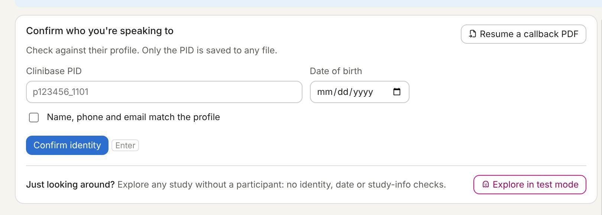
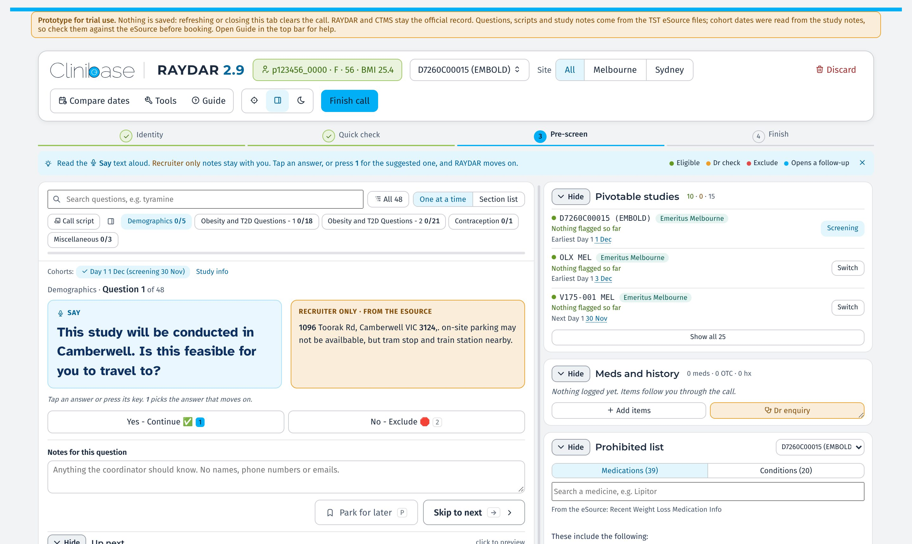

Mockups for search, test mode and Clinibase branding
Nothing here is built yet. Each section shows the options I'd build, with my recommendation marked. Pick one per section (or tell me what to change) and I'll add your choices to the pipeline. The full plan is in raydar-app/PIPELINE.md.
Suggestions as you type
Today the panel only recognises a full name, so "quetiap" says "isn't a medicine RAYDAR knows". The fix lists the medicines that start with what's typed, from the third letter, and keeps "doesn't recognise" for names that really aren't there. These use real results from the dictionary and EMBOLD's list.
Which layout?
Inside the panel, with the answer on each row. The recruiter sees Excluded, Doctor check or Not on the list while still typing, without picking first. Enter or a click opens the full card (eSource wording, time window, Add to med log).
A drop-down, the same as the med log name box. Familiar, but it covers the list underneath, and the recruiter has to pick a name before seeing whether it's on the list.
What S1 shows for each kind of search
A partial name with many matches. All 15 insulins are listed, shortest names first; the list scrolls after the first few.
Half-typed or misspelt. Shown as suggestions, never as "doesn't know".
Only real unknowns get the message (top). Below, outlined in red: today's wording, which goes away.
Keys: ↑ ↓ move through the suggestions, Enter or Tab opens the highlighted one, Esc closes them. Typing the full name keeps the list showing, the same as the med log in 2.9.
Walk through any study without the call's checks
For recruiters getting to know a study and for anyone testing RAYDAR. Checks are switched off, every question can be opened in any order, and everything still works so it can be tested. Pink marks it, because the Clinibase CTMS already uses a pink "You are in UAT" banner for its test system, and the brand guidelines keep pink as a sparing accent.

How visible should it be?


Switched off in test mode
- Identity: PID, date of birth and profile match
- Quick check (optional, still there to try)
- Dates and availability, and the study information check: a study opens straight at its questions
- Order: any section or question opens from the section tabs or list
Still works, so it can be tested
- Answers, outcomes, follow-up questions, notes
- Med log, prohibited-list matching, Dr enquiry
- Finish and Save PDF. The PDF is stamped TEST, not a real pre-screen and its name starts
TEST- - "Back to normal mode" starts a clean call; test calls are never offered by "Back to the last call"
Three looks, from the brand guidelines
These are screenshots of the real RAYDAR 2.9 with each look applied, on EMBOLD's first question. Layout, wording and the green, amber and red outcome colours don't change. Only the colours, type and logo do.



Readability, all options: Clinibase Blue is too light for white text (2.5:1, below the 4.5:1 guideline), so A and B put white text on a deeper shade of it (4.9:1) and C puts navy text on it (5.9:1). Links use a darker blue on white and a lighter one on navy. The Say card keeps Atkinson Hyperlegible, a font made for easy reading aloud, unless you'd rather it used Fira Sans. Fonts and the logo are built into the file, so it still works offline.
Click any screenshot to open it full size.
What I need from you
- Search: S1 (inside the panel, recommended) or S2 (drop-down)?
- Test mode: T1 (banner, frame and label, recommended) or T2 (banner and label)? Should the recruiter file have it, or only the admin and all-in-one files? Should "Show questions hidden by earlier answers" start on or off?
- Branding: A (recommended), B or C, or a mix (for example, A's colours with B's navy header)? Keep Atkinson Hyperlegible for the Say card?
I'll add your picks to the pipeline and build everything together when you say go.